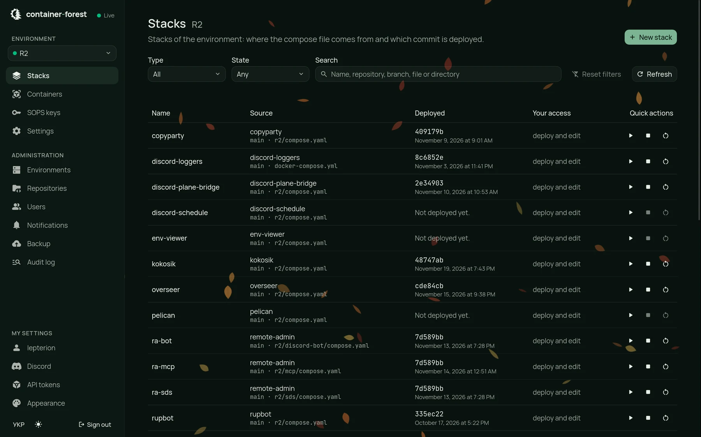
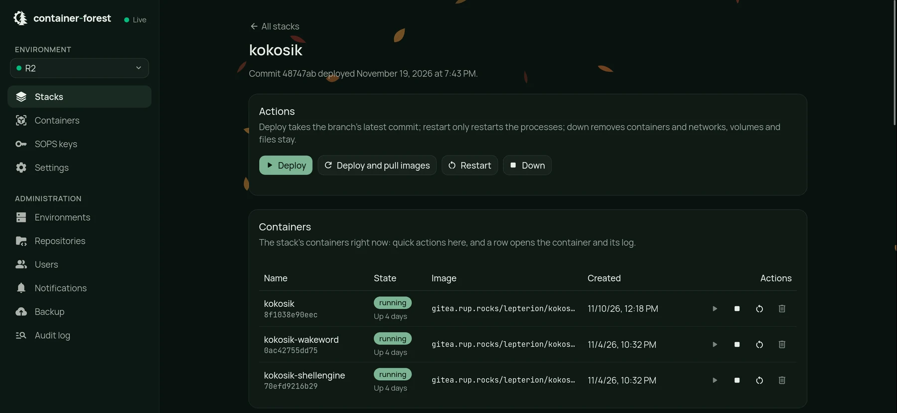
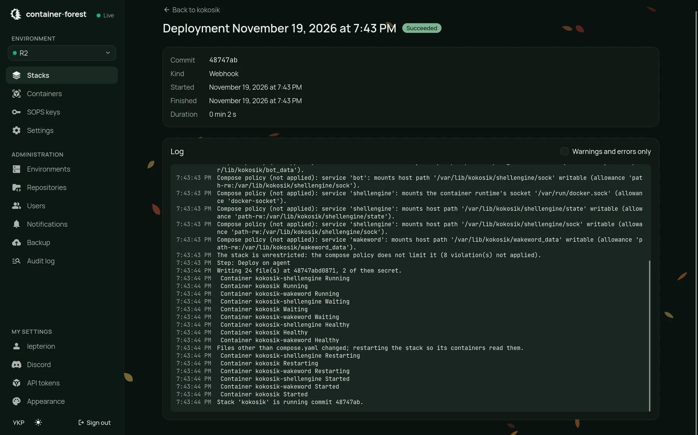
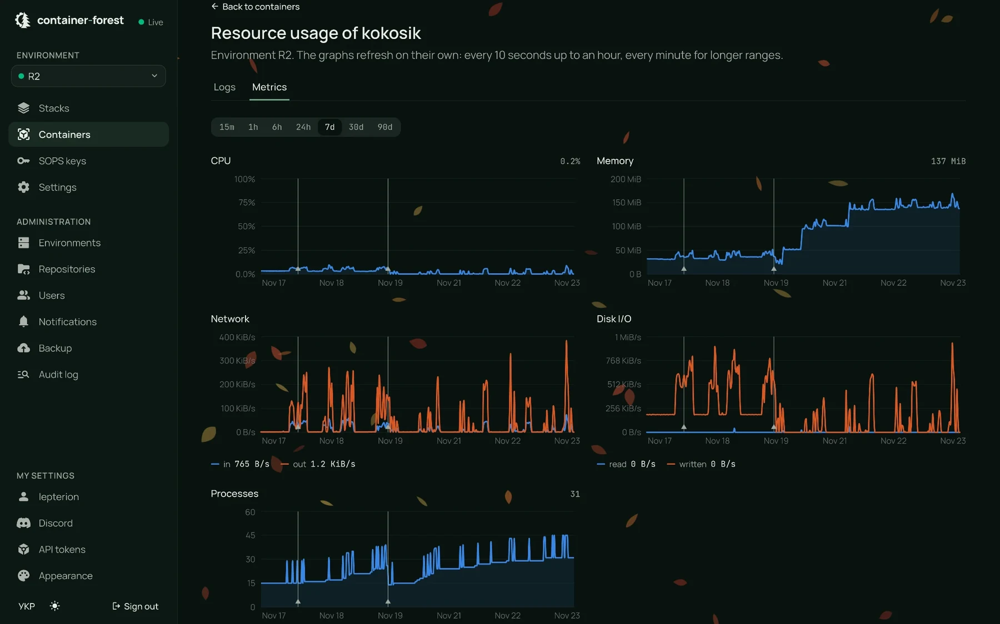
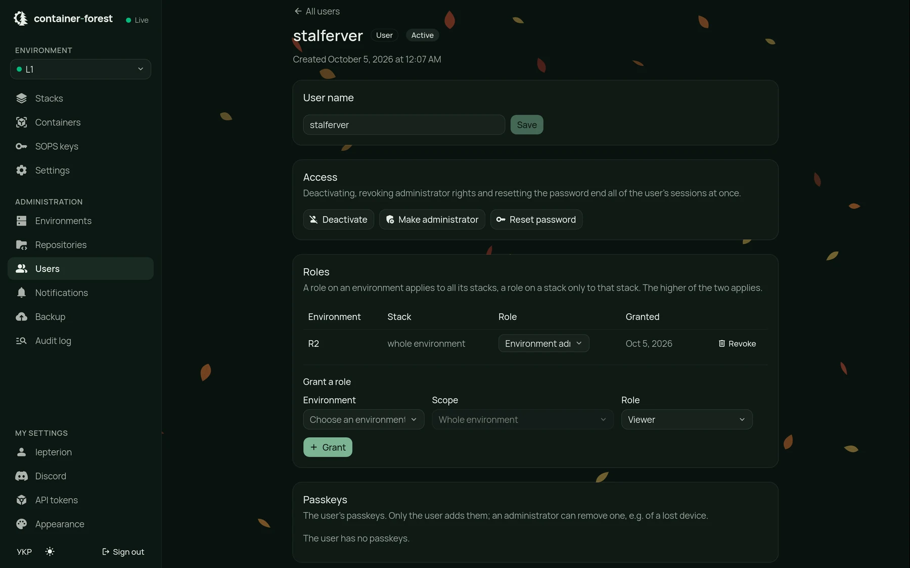
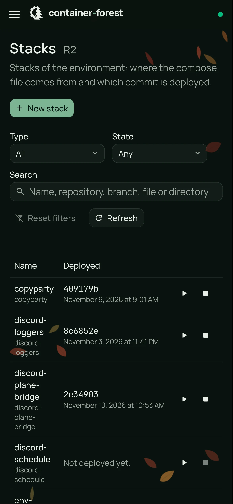
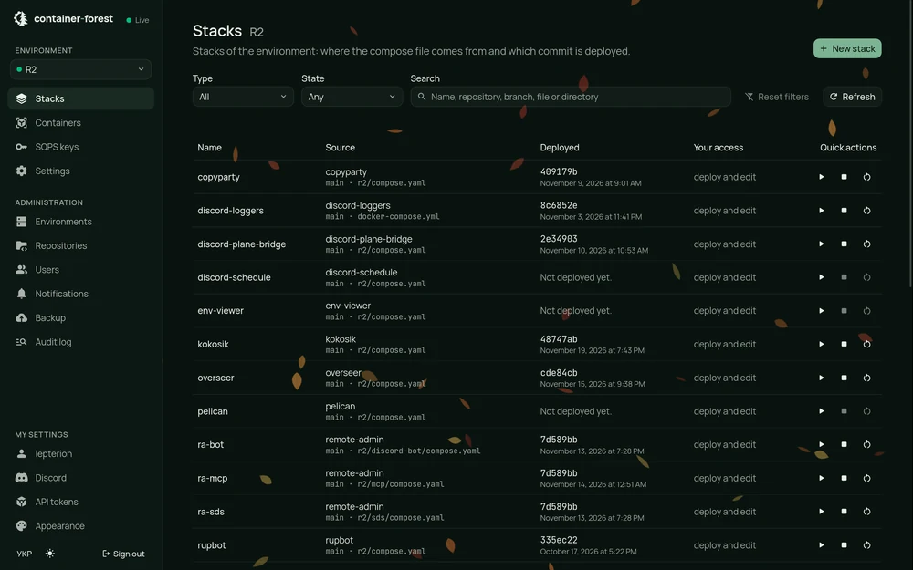

Усі сервери в одному місці
Стан кожного сервера й контейнера видно в панелі. Не треба заходити на кожен по SSH.

GitOps для Docker Compose на кількох серверах. Робите push у git, і стеки розгортаються. Керуйте ними з вебпанелі, з терміналу або з Discord, а секрети тримайте в тому ж репозиторії, зашифровані SOPS.
Звичайний Docker і Compose, без Kubernetes і Swarm. Для команди, де в людей різний рівень доступу.
Стан кожного сервера й контейнера видно в панелі. Не треба заходити на кожен по SSH.
Конфігурація разом із паролями лежить в одному репозиторії. Відкритим текстом не зберігається нічого.
Дайте людині право перезапускати один сервіс на одному сервері, без повного доступу до решти.
Сервіс упав, а ноутбука поруч немає? Одна команда в Discord, з тими самими правами, що й у панелі.
Система з жовтня 2026 року керує справжньою продакшн-інфраструктурою. До версії 1.0 мінорний реліз може містити зміни, що ламають сумісність; вони описані в changelog.
По одному на сервер, реєстрація одноразовим токеном. Агент сам підключається до центрального сервісу, тож сервер може стояти за NAT без відкритих портів.
Стан і логи кожного контейнера; запуск, зупинка, перезапуск. Compose-проєкти, запущені на сервері вручну, теж видно й ними можна керувати.
Деплой з публічного чи приватного репозиторію: вручну, після push або з CI. Кожен деплой прив'язаний до коміту, можна вимагати підписані коміти.
Поверніть стек на коміт, який уже був розгорнутий. Стек тримається на ньому, поки ви не скажете повернутися до гілки.
SOPS з окремим age-ключем на сервер або на стек. Через git-фільтр forest секрети в клоні видно відкритим текстом, а комітяться вони зашифрованими.
restart, redeploy, redeploy with pull і down окремими кнопками, а не одна кнопка «оновити».
Політика образів для стеку: сервіс помічає нові версії образів і сам комітить новий тег у репозиторій стеку.
Графіки CPU, пам'яті, мережі, диска й процесів для контейнерів, стеків і серверів, сповіщення про високе навантаження. Ті самі цифри в CLI і боті.
Ролі на сервер або на окремий стек, compose-політика сервера (що стекам можна монтувати й запускати) і журнал аудиту.
Пароль, passkey або Discord. Двофакторна автентифікація через застосунок-автентифікатор, яку адміністратор може зробити обов'язковою для всіх.
Команди, меню й сповіщення: деплої, впалі контейнери, агенти офлайн, високе навантаження. Права ті самі, що й у панелі.
Вхід через браузер, персональні API-токени з обмеженнями (лише читання, окремі сервери, строк дії). Усе, що вміє панель.
Англійською й українською, з оновленнями наживо. Працює на телефоні, встановлюється як застосунок, має п'ять тем кольорів.
Резервні копії центрального сервісу в S3-сумісне сховище, зашифровані офлайн-ключем.
Панель, API, агенти й бот працюють через один домен на порту 443. Caddy сам отримує сертифікат.
Ще немає:вхід через OIDCживий потік логівконсоль контейнера
Скриншоти з робочої інсталяції, тема forest. Листя на фоні — сезонна анімація, її можна вимкнути.






Інтерактивний макет: натисніть «Перезапустити» біля контейнера або перемкніть сервер. У Discord бот сам повідомляє про впалий контейнер, а перезапустити його можна кнопкою під повідомленням.
| Контейнер | Стан | CPU | Працює | Дія |
|---|
Сервери, контейнери й повідомлення тут вигадані для прикладу.
На кожному сервері працює агент. Він сам підключається до центрального сервісу і тримає з ним постійний gRPC-стрім.
Docker API не виставляється в мережу. Сервери можуть стояти за NAT: з'єднання завжди починає агент.
Агент виконує фіксований набір типізованих команд з Protocol Buffers. Команди «виконай довільний shell» немає.
Секрети, політики й права зберігає і перевіряє лише центральний сервіс. Панель, бот і CLI просто ховають недоступні дії.
Секрети шифруються окремим ключем для кожного сервера або стеку. Розшифровуються вони лише в центральному сервісі, безпосередньо перед розгортанням. Editor у своєму клоні репозиторію бачить їх відкритим текстом завдяки git-фільтру forest.
DB_PASSWORD: ENC[AES256_GCM,data:9xK2b0Qa,type:str] SMTP_TOKEN: ENC[AES256_GCM,data:Qm7vZr1w,type:str] sops: age: - recipient: age1prodkyiv7h…q2
DB_PASSWORD: tr33-r1ngs-42 SMTP_TOKEN: sm_live_8f3e1c # розшифровано ключем prod-kyiv # staging цей файл не прочитає
Роль видається на весь сервер або на окремий стек; на стеку діє більша з двох ролей. Адміністратора сервера призначає лише адміністратор системи і лише на весь сервер.
| Дія | Viewerдивиться | Operatorперезапускає | Editorрозгортає | Адмін серверакерує сервером | Adminкерує всім |
|---|---|---|---|---|---|
| Стеки, стан, логи й графіки | ✓ | ✓ | ✓ | ✓ | ✓ |
| start / stop / restart | – | ✓ | ✓ | ✓ | ✓ |
| Редагування стеку, деплой і відкат | – | – | ✓ | ✓ | ✓ |
| Compose-політика, ключі й ролі на сервері | – | – | – | ✓ | ✓ |
| Користувачі, сервери й журнал аудиту | – | – | – | – | ✓ |
Editor на сервері фактично має root на хості: compose-файл може змонтувати / або запустити privileged-контейнер. Compose-політика сервера обмежує, що стекам можна, але цю роль однаково видавайте свідомо.
За замовчуванням forest. За сезонним фоном пролітають молоде листя навесні, метелики й тополиний пух улітку, падолист восени, сніг узимку або дощ цілий рік. Фон нічого не закриває і вимикається.

Ідея схожа на Portainer, і в інфраструктурі команди container-forest уже повністю його замінив. Відрізняємося секретами в git, Discord-ботом і свідомо вужчим скоупом.
| Можливість | Portainer CE 2.x | Dockge 1.5 | Komodo 2.x | Arcane | container-forest |
|---|---|---|---|---|---|
| Розвиток | заморожений, лише виправлення | повільний, активні форки | активний | активний | активний |
| Кілька серверів | так | так (агенти) | так | так (агенти) | так |
| Агент сам ініціює з'єднання | лише в Edge-режимі | — | так | так (Edge) | так, це єдиний режим |
| Деплой з git | так | ні | так | частково | так: публічні й приватні репозиторії, після push, з CI |
| Секрети, зашифровані в git | ні | ні | ні | ні | так: SOPS, age-ключ на сервер або стек |
| Ролі на сервер і окремий стек | на сервер | ні | так | на всю систему | так |
| Керування з Discord | ні | ні | ні | ні | так: команди й меню з тими самими правами |
| Сповіщення в Discord | ні | ні | webhook'ом, лише текст | — | через бота, з кнопками «Restart» і «Logs» |
| restart / redeploy / redeploy with pull / down | ні | частково | так | частково | так |
У чому поступаємося: зрілість, кількість функцій, Swarm і Kubernetes, збірка образів, OIDC (поки немає), консоль контейнера, розмір спільноти. Стан на осінь 2026 року; «—» означає, що даних ми не знайшли. Детальніше в docs/comparison.md.
Потрібен хост з Docker і DNS-ім'ям, на яке відкриті порти 80 і 443, для центрального сервісу, і Docker на кожному сервері, яким ви хочете керувати.
mkdir -p /srv/container-forest && cd /srv/container-forest curl -fsSLO https://raw.githubusercontent.com/container-forest/container-forest/main/deploy/aggregator/compose.yaml cat > .env <<'EOF' CF_DOMAIN=forest.example.com CF_BOOTSTRAP__ADMINUSERNAME=admin CF_BOOTSTRAP__ADMINPASSWORD=change-me-to-12+-chars EOF chmod 600 .env docker compose up -d
Caddy сам отримає сертифікат Let's Encrypt для CF_DOMAIN. Увійдіть на https://forest.example.com, а потім приберіть два рядки CF_BOOTSTRAP__*.
У панелі відкрийте Environments → New environment. Панель покаже одноразовий токен і готовий compose.yaml для агента. Запустіть його на сервері командою docker compose up -d, і сервер з'явиться в панелі онлайн.
Додайте git-репозиторій (для приватного спершу підключення до git-сервера з токеном лише на читання) і створіть стек: репозиторій, гілка і шлях до compose.yaml. Натисніть Deploy або ввімкніть деплой після push.
Завантажте forest з останнього релізу для Linux, macOS чи Windows і увійдіть:
forest login https://forest.example.com
container-forest започаткували у 2026 році четверо розробників. Систему проєктують і рецензують люди, а більшість коду пишуть AI-агенти: кожна їхня зміна проходить те саме рев'ю, CI і тести.
Team Lead, архітектура й безпека. Центральний сервіс, агент, DevOps.
@lepterionBackend агента: обробники команд, Docker і Docker Compose.
@volodaboyar1-starDiscord-бот і система сповіщень.
@Dmyt-SВебпанель і UI/UX. API для панелі, користувачі, аудит.
@denysenkoliubovC# і .NET 10, React і TypeScript, gRPC, SOPS і age. Архітектура, інваріанти безпеки й рішення описані в документації. Баг-репорти, ідеї й pull request'и вітаються.
$ git clone https://github.com/container-forest/container-forest.git